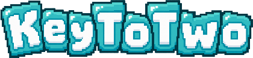
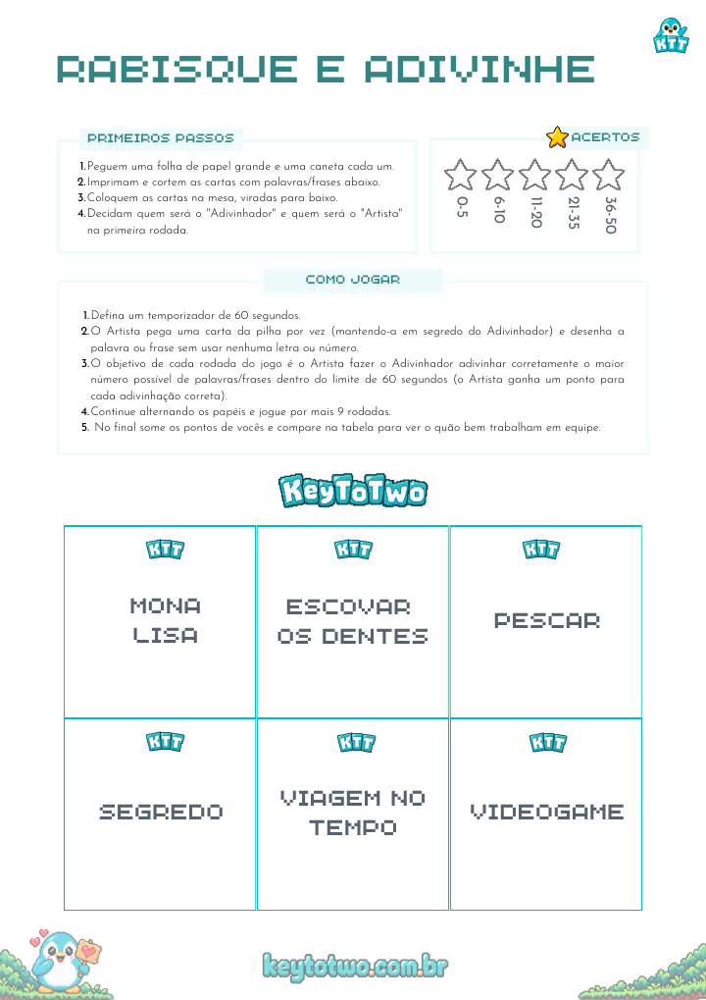

KeyToTwo · jogos para casais
Um pacote com 5 jogos para imprimir, preparar e jogar juntos em casa. O Kito traz a ideia. Vocês fazem a noite acontecer.
Uma prévia do que vai para a mesa de vocês.

Detalhes e prévia em breve.
Detalhes e prévia em breve.
Estamos preparando este jogo para o pacote.
Estamos preparando este jogo para o pacote.
Esboço da Direção A · copy existente do site · capas tipográficas no lugar da arte do Kito (achado P0-2).